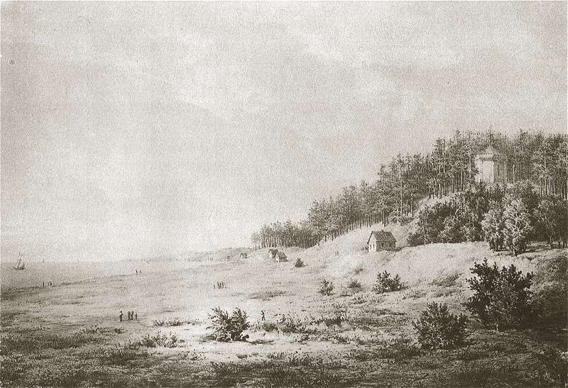

Palanga¶
In the 1380s [Historical record]¶
A coastal settlement in the Curonian-Samogitian borderland, about 25 km north of the Order’s Memel (Klaipėda) and near the Livonian frontier on the Šventoji. Birutė’s hill is a dune with a hillfort and settlement of the 10th-13th centuries, a defensive wall of the late 14th or early 15th century, and a pagan sanctuary or observatory (late 14th-15th century) found by excavation in 1989; dates vary by source. A St George chapel was built on the summit in 1506 to counter the cult of Birutė’s grave. The tradition that Birutė was a vaidilutė here, taken by Kęstutis c. 1350, buried on the hill, is first set down by Stryjkowski (1582); the Order chronicler Wigand says she was drowned at Brest in 1382, and Polish-Lithuanian delegates at Constance (1416) said she lived long and died naturally. The Treaty of Melno (27 Sep 1422) left Lithuania a coast from Palanga to Šventoji. A church is documented c. 1540. Sources: VLE (Palanga, Birutė), en.wikipedia.
Palanga

Palanga · place — Image: Napoleon Orda, Public domain via Wikimedia Commons¶

Type |
place |
Note |
Coastal sanctuary and sacred Birutė Hill; shrine of the amber keepers and vaidilutės. |
Sensory sketch¶
A dune coast under pine: pale sand, bent pines, sea fog, the smell of iodine and weed, smoke from drying fish, resin heating in the sun. After storms amber washes up in the wrack line, and the beach-combers know it by its warm, light weight. The Baltic is cold, grey and loud in autumn gales, glassy in summer evenings; in winter the shore ice grates. At night the only lights are hill fires and, on clear days, smoke from Memel to the south. Gulls, cormorants; wind is the main sound.
In the saga¶
The Amber Queen’s shore. The last of the priestess line watches here; the Šventasis akmuo and the kneeling amber woman stand on the hill (Book I ch. 11, ch. 27). Birutė’s Amber Sacrifice at the full moon in 1384 buys the Hidden Groves of Samogitia, and the sea refuses to keep her (the ring thrice). Memel’s smoke is the Order’s presence on the horizon: the refuge is a front line. In 1449-50 it is where the keeper, Žiežirba, is named at the fire and cremated on the beach (Book V ch. 29). Correction on the page: there is no castle at Palanga, only the hill, a palisade and the priestesses’ house.
Getting there¶
From Trakai 340-380 km, eight to ten days on horse (four with relays; this is Birutė’s own route after the arrest). From Krėva 470-520 km, ten to thirteen days (five to six with relays). From Vilnius 350-400 km. Memel is only about 25 km south: half a day’s ride, one day on foot. The Šventoji and the Livonian border lie a few km north. Between Palanga and the Nemunas lie the Samogitian uplands, with few roads; most travel follows the coast and sandy tracks.
Scenes set here¶
Book I ch. 3 (in memory), ch. 11 Našlė, ch. 27 Gintaro auka; Book III ch. 14 Jūros balsas (March 1410); Book IV ch. 8 Klūpančioji (Oct 1417); Book V ch. 1 (the 1450 beach), ch. 25 (1445-46), ch. 29 Vardas prie ugnies, ch. 30 (a farmstead beyond Palanga, 1553); Book VI ch. 10 Palangos ugnis, ch. 11 (1349).
Relations
Events here: Birutė’s Amber Sacrifice · Kęstutis marries Birutė · The keeper is named at the Palanga fire · Žiežirba dies; cremated on the beach
Timeline¶
Year |
Event |
Book |
|---|---|---|
1350 |
VI · The Holy Forest (prequel) |
|
1384 |
I · The Wolf’s Exile |
|
1449-12-12 |
V · The Wolf’s Legacy |
|
1450-03 |
V · The Wolf’s Legacy |
Connections¶
graph LR
ev_birute_sacrifice["Birutė's Amber Sacrifice"]
ev_keeper_dies["Žiežirba dies; cremated on the beach"]
ev_marriage["Kęstutis marries Birutė"]
ev_ziezirba_named["The keeper is named at the Palanga fire"]
palanga["Palanga"]
ev_marriage -->|Location| palanga
ev_birute_sacrifice -->|Location| palanga
ev_ziezirba_named -->|Location| palanga
ev_keeper_dies -->|Location| palanga
style palanga stroke-width:3px